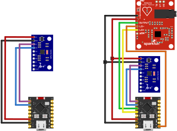

Medición de Movimiento
Uso de IMUs en 3 ejes para evaluar el rango articular y la calidad de ejecución de cada ejercicio.
Sistema de monitoreo inalámbrico basado en sensores y tecnologías open source para optimizar procesos de rehabilitación física domiciliaria.
Diseñar e implementar un sistema portátil e inalámbrico para la medición y análisis del movimiento, con el fin de guiar al paciente durante ejercicios de movilidad motora y apoyar la readaptación progresiva y segura.
Uso de IMUs en 3 ejes para evaluar el rango articular y la calidad de ejecución de cada ejercicio.
Captura de la señal eléctrica muscular para detectar compensaciones y fatiga durante la sesión.
Proporcionar métricas de seguimiento terapéutico como rango de movimiento y simetría al clínico.
Dos nodos portátiles que cubren el mapeo articular completo del brazo.
Captura la orientación y el movimiento en los 3 ejes, junto con la actividad eléctrica muscular.
Mide la cinemática complementaria para lograr el mapeo articular completo del brazo.
Los datos se transmiten a través de ESP-NOW hacia un nodo maestro, el cual utiliza LoRa para llegar a un Gateway celular (LILYGO) que publica en un broker MQTT.
ESP32-C3 · IMU · ECG/EMG
ESP-NOW · 2.4 GHzESP32 · LoRa SX1278
LoRa · 915 MHzLILYGO T-SIM7070G
TCP/IP · red celularEMQX
MicroserviciosInfluxDB · Grafana · MediaPipe

El diagrama ilustra el flujo de los datos desde la captura anatómica hasta su visualización: los nodos de brazo y antebrazo transmiten por ESP-NOW (2.4 GHz) al nodo maestro; este retransmite por LoRa (915 MHz) al Gateway celular, el cual publica en un broker MQTT (EMQX) a través de TCP/IP sobre red celular. Finalmente, los microservicios en Docker consumen los datos para su almacenamiento en InfluxDB y visualización tanto en MediaPipe como en dashboards clínicos.
Paneles para el monitoreo en tiempo real y el análisis histórico de cada sesión.
Esquemas de conexión de cada módulo y un modelo 3D interactivo del prototipo.

ESP32-C3 Super Mini + MPU9250 (IMU) + AD8232 (ECG/EMG)

ESP32 + Módulo LoRa Ra-02 SX1278

LILYGO T-SIM7070G + Módulo LoRa Ra-02 SX1278
Explora el ensamblado del prototipo. Pasa el cursor sobre el modelo o usa los botones superiores para aislar cada componente y conocer su función.
Arrastra para rotar Scroll para zoom
Dashboard de integración.
Visualización 3D en tiempo real.
Análisis histórico de datos.
Contenerización de servicios.